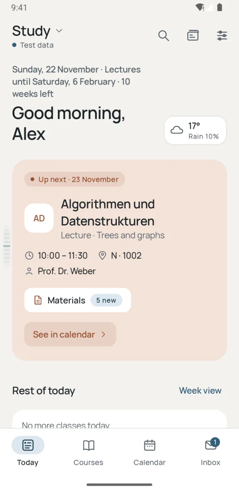
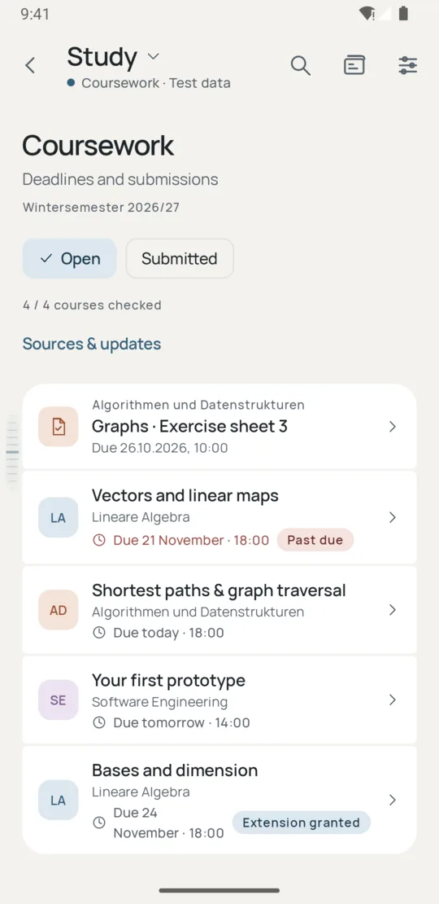
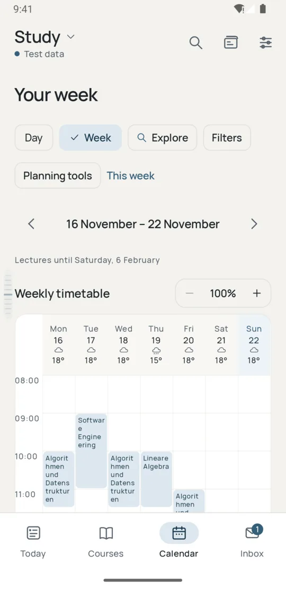
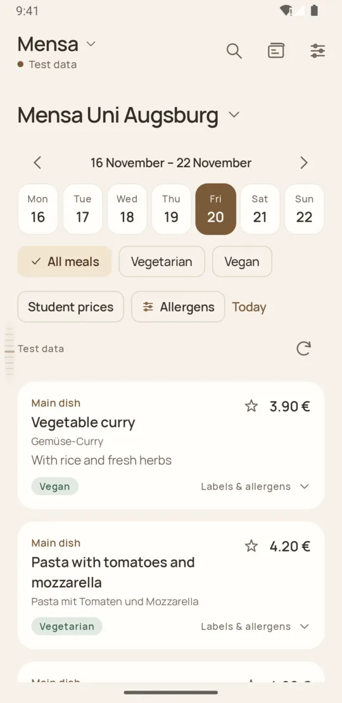
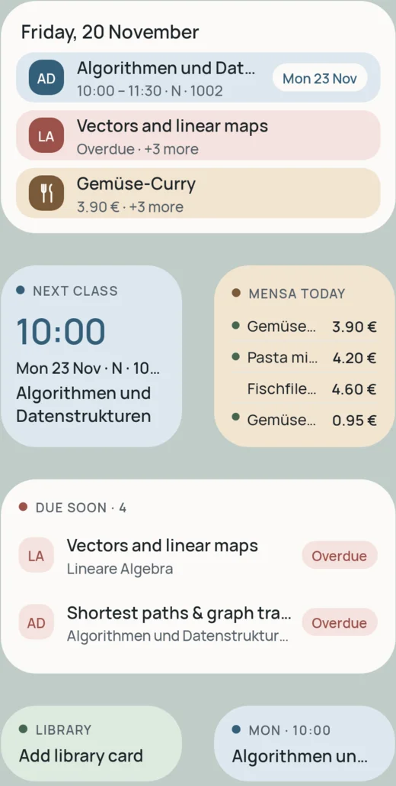

An unofficial campus app for the University of AugsburgEine inoffizielle Campus-App für die Universität Augsburg
It puts your DigiCampus courses, the Mensa menu and your library account in one app. Anything you’ve opened is kept on the device, so your timetable and course files still open where there’s no signal. Sie bringt deine DigiCampus-Kurse, den Speiseplan der Mensa und dein Bibliothekskonto in eine App. Was du einmal geöffnet hast, bleibt auf dem Gerät, sodass Stundenplan und Kursdateien auch ohne Empfang aufgehen.
Free and open source. It isn’t made or endorsed by the university. Kostenlos und quelloffen. Die App stammt nicht von der Uni und wird auch nicht von ihr unterstützt.





Screenshots from the Android app, with made-up sample data.Screenshots der Android-App mit erfundenen Beispieldaten.
What’s in itWas drin ist
StudyStudium
Today starts with your next class and its room, then the rest of the day with gaps and cancellations, and whatever is due in the next seven days. Coursework collects Courseware tasks, Vips sheets and submission folders from every course into one list sorted by due date, and Vips opens inside the app, already signed in. Course files sync into ordinary folders on your device. Messages, forums, the calendar and office-hour booking are there too, and the timetable exports as an .ics file. Heute beginnt mit deinem nächsten Termin samt Raum, danach kommen der Rest des Tages mit Lücken und Ausfällen und alles, was in den nächsten sieben Tagen fällig ist. Unter Aufgaben landen Courseware-Aufgaben, Vips-Blätter und Abgabeordner aus allen Kursen in einer Liste, sortiert nach Frist, und Vips öffnet sich direkt in der App, schon angemeldet. Kursdateien werden in normale Ordner auf deinem Gerät synchronisiert. Nachrichten, Foren, Kalender und Sprechstunden sind auch dabei, und den Stundenplan kannst du als .ics-Datei exportieren.
LibraryBibliothek
Search the catalogue and see which copies are on the shelf, and where. Once you add your library card you also get your loans, reservations and pickups, can renew a loan, and can have it remind you before something is due. Durchsuch den Katalog und sieh, welche Exemplare wo im Regal stehen. Mit deinem Bibliotheksausweis kommen Ausleihen, Vormerkungen und Abholungen dazu; du kannst verlängern und dich vor Fristende erinnern lassen.
Mensa
The menus of every Studierendenwerk Augsburg location, by day or by week, with vegetarian, vegan and allergen filters and the price for your group. Mark a dish as a favourite and you’ll hear about it when it’s on. In English the dish names are translated, with the German original underneath. Die Speisepläne aller Standorte des Studierendenwerks Augsburg, nach Tag oder Woche, mit Filtern für vegetarisch, vegan und Allergene und dem Preis für deine Gruppe. Markier ein Gericht als Favorit, dann sagt dir die App Bescheid, wenn es das gibt.
On the home screenAuf dem Startbildschirm
Five widgets on Android and iPhone: Your day, Next class, Mensa today, Due soon and Library. They read from the saved copy, so they don’t wait for the network. Long-press the app icon for shortcuts to Today, Calendar, Mensa and Search. To hand in a file, share it to ZenCampus, or on iPhone open it with ZenCampus from Files. Fünf Widgets auf Android und iPhone: Dein Tag, Nächster Termin, Mensa heute, Bald fällig und Bibliothek. Sie lesen aus der gespeicherten Kopie und warten nicht aufs Netz. Lang auf das App-Symbol drücken für Verknüpfungen zu Heute, Kalender, Mensa und Suche. Um eine Datei abzugeben, teil sie an ZenCampus oder öffne sie auf dem iPhone in der Dateien-App mit ZenCampus.
PrivacyDatenschutz
There is no ZenCampus server. The app connects directly to the services in the privacy policy, including DigiCampus, Microsoft sign-in and the university library. Es gibt keinen ZenCampus-Server. Die App verbindet sich direkt mit den Diensten in der Datenschutzerklärung, darunter DigiCampus, die Microsoft-Anmeldung und die Universitätsbibliothek.
You can save several Study or Library sign-ins in this device’s secure storage, separate from the signed-in account. Each is sent only to the sign-in page it fills. The second factor stays on your phone. Remove saved sign-ins in Settings or when you sign out. Disconnecting the library also offers to remove its saved sign-ins. Both removal options are checked by default. Du kannst mehrere Studien- oder Bibliotheksanmeldungen im sicheren Speicher dieses Geräts ablegen, unabhängig vom angemeldeten Konto. Jede Anmeldung wird nur an die Anmeldeseite gesendet, auf der sie ausgefüllt wird. Der zweite Faktor bleibt auf deinem Handy. Gespeicherte Anmeldungen kannst du in den Einstellungen oder beim Abmelden entfernen. Beim Trennen der Bibliotheksverbindung kannst du auch deren gespeicherte Anmeldungen entfernen. Beide Optionen sind standardmäßig ausgewählt.
No ads and no analytics. Crash reports stay off unless you switch them on. Uploads, renewals and bookings always show what will be sent and wait for you to confirm. Keine Werbung, keine Analyse. Absturzberichte bleiben aus, solange du sie nicht einschaltest. Abgaben, Verlängerungen und Buchungen zeigen immer, was gesendet wird, und warten auf deine Bestätigung.
PRIVACY.md lists what is stored and sentPRIVACY.md listet auf, was gespeichert und gesendet wird
Download
There’s no public release yet. Once there is, the links below go straight to its files.Noch gibt es keine öffentliche Version. Sobald es eine gibt, führen die Links unten direkt zu ihren Dateien.
Android, Windows and Linux can update themselves from GitHub if you let them.Android, Windows und Linux können sich über GitHub selbst aktualisieren, wenn du das erlaubst.
zencampus/bin/zencampus.x86-64 mit X11 oder XWayland. Entpacken und zencampus/bin/zencampus starten.
tar.gzQuestionsFragen
Is this the university’s app?Ist das die App der Uni?
No. It’s an independent open-source project and has no connection to the University of Augsburg. It uses the same services you use in the browser.Nein. Es ist ein unabhängiges Open-Source-Projekt ohne Verbindung zur Universität Augsburg. Es nutzt dieselben Dienste wie du im Browser.
Do I need a DigiCampus account?Brauche ich einen DigiCampus-Zugang?
For Study, yes. The Mensa and the library catalogue work without signing in, and you can add a library card later.Für das Studium ja. Mensa und Bibliothekskatalog gehen ohne Anmeldung, und deinen Bibliotheksausweis kannst du später hinzufügen.
What does it cost?Was kostet das?
Nothing. There are no ads or in-app purchases, and the code is MIT-licensed.Nichts. Es gibt keine Werbung und keine In-App-Käufe, und der Code steht unter der MIT-Lizenz.